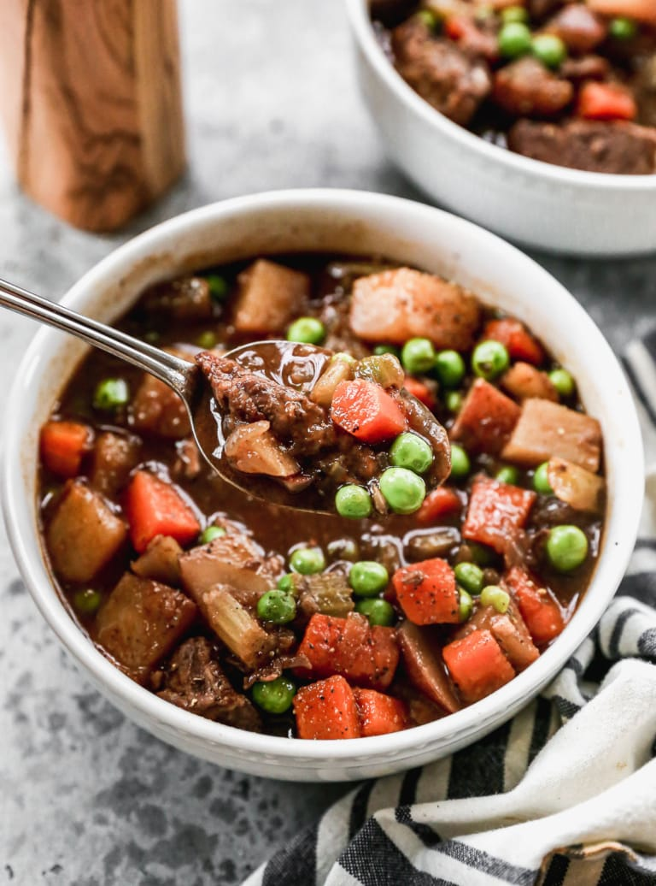
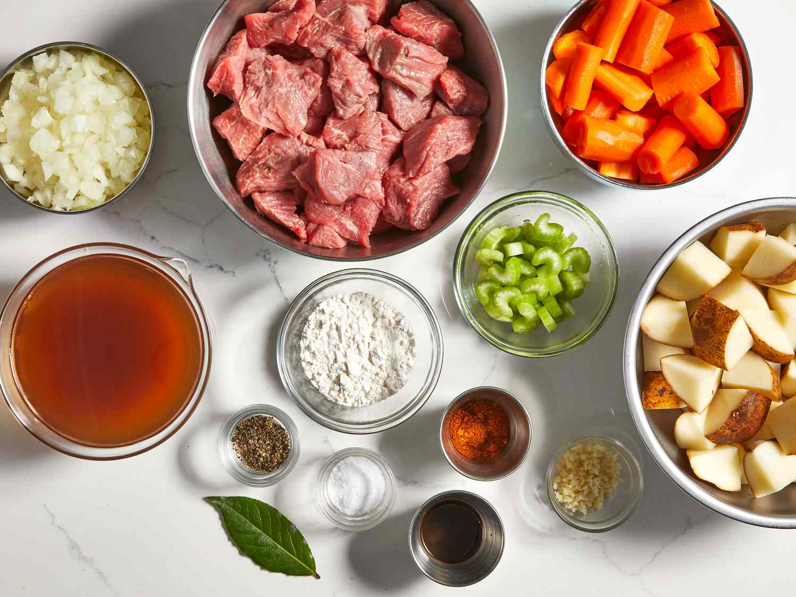

Slow Cooker Beef Stew
This hearty slow cooker beef stew is deliciously comforting. With ingredients like
potatos, carrots, celery, broth, herbs, and spices, it's the perfect dish to warm
the family with!

Ingredients
- 2 pounds beef stew meat, cut into 1-inch pieces
- 1/4 cup all-purpose flour
- 1/2 teaspoon salt
- 1/2 teaspoon ground black pepper
- 1 1/2 cups beef broth
- 4 medium carrots, sliced
- 3 medium potatoes, diced
- 1 medium onion, chopped
- 1 stalk celery, chopped
- 1 teaspoon Worcestershire sauce
- 1 teaspoon ground paprika
- 1 clove garlic, minced
- 1 large bay leaf

Steps
- Place meat in slow cooker.
- Mix flour, salt, and pepper together in a small bowl. Pour over meat, and stir until meat is coated.
- Add beef broth, carrots, potatoes, onion, celery, Worcestershire sauce, paprika, garlic, and bay leaf; Stir to combine.
- Cover and cook until beef is tender enough to cut with a spoon, on Low for 8 to 12 hours, or on high for 4 to 6 hours.
- Enjoy!